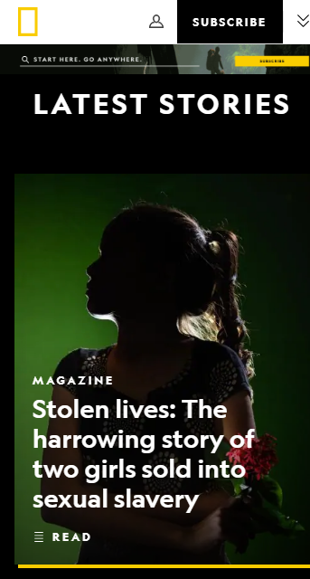

White Space & Clean Design: Bungie
Bungie is a video game developer and they use their website to talk about current events in the game and their overall interactions in the community. The page is cleanly created so that you can navigate to recent articles more easily, as well as feature the art that is in the game.
Law of Proximity: Archive of Our Own
Archive of our Own is a collection of Original media and Fanfiction. The organization is made so that you can find things more easliy, as well as explore the majority of the archive with ease.
Rule of Thirds: National Geographic
We all know National Geographic. Photography is one of the main sources to find amazing practices of Rule of Thirds, and you can see it even as you enter their website. The first image here is already taken in a rule of thirds fashion and you can see more examples of it throughout the site.